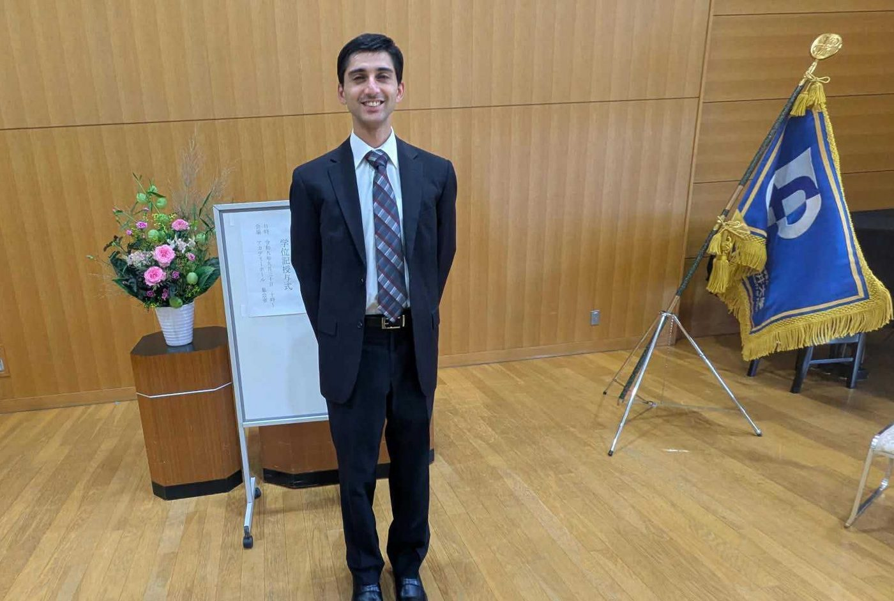
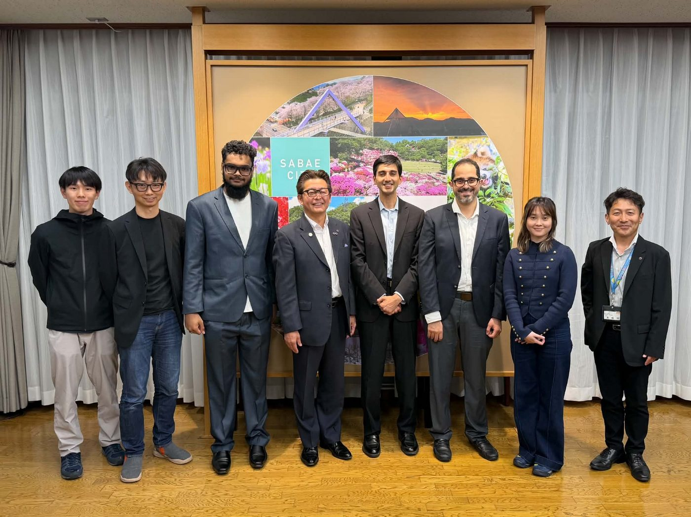

Between Japan
and Silicon Valley.
I’m a Specially Appointed Assistant Professor at the University of Fukui’s Regional Revitalization Headquarters. I teach entrepreneurship and AI and work with local governments across Hokuriku.
I’ve been Founder and CEO of Virufy since 2020.
My 15+ years in tech and AI include leading engineering teams in Silicon Valley and Tokyo at VMware Pivotal Greenplum and HP Enterprise, and serving as Technical Lead at MIT Sandbox.
Fluent in Japanese and Urdu/Hindi. One Young World Japan Ambassador and Eiheiji Town Evolution Ambassador.
Education
-
2023–2026
University of Fukui Doctor of Engineering, behavioral nudges and human data
-
2021–2022
UC Berkeley Haas School of Business MBA and Master of Engineering (Data Science) concurrent program, first year
-
2020–2021
Stanford University Graduate AI courses, 4.0 GPA: CS230 Deep Learning with Andrew Ng, CS231n Visual Recognition with Fei-Fei Li, CS329S ML Systems Design with Chip Huyen
-
2010–2012
UC Berkeley B.A. Computer Science

